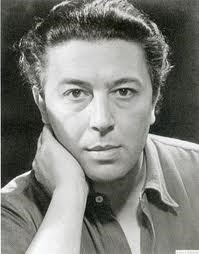

Poeta y crítico francés
Nació el 18 de febrero de 1896, en Pinchebray, Orne (Francia).
Entre los años 1906 y 1912 realiza estudios secundarios en el colegio Chaptal. Después cursó estudios de medicina, tras lo que comenzó a trabajar en hospitales psiquiátricos durante la I Guerra Mundial.
Dedicó gran parte de su tiempo a estudiar detalladamente las obras de Sigmund Freud y a experimentar con la escritura automática. Todo esto influyó notablemente en su formulación de la teoría surrealista.
Escribió en la revista Littérature, la principal publicación surrealista, en cuya fundación colaboró junto con Paul Éluard, Louis Aragon y Philippe Soupault y de la que fue editor durante muchos años.
Cursó estudios en su ciudad natal. Escribió sus primeros poemas a los doce años y pronto apareció publicado un manifiesto en el que rechazaba toda la poesía anterior a él.
En el año 1921 publica Los campos magnéticos, en la que explora las posibilidades de la hipnosis. En 1922 rompió con Tristan Tzara, el fundador del dadaísmo y estableció la estética del surrealismo en el primer Manifiesto surrealista de 1924, que conocería dos redacciones posteriores en 1930 y 1942.
Su obra más creativa es la novela Nadja (1928), en parte autobiográfica. En 1937 inaugura la galería "Gradiva" en la calle de Seine. En 1941 se embarca en el Capitaine-Paul-Lemerle hacia Martinica, donde es internado en un campo. Liberado bajo fianza llega a Nueva York para un exilio que durará cinco años.
Escribe La lanterne sourde (La linterna sorda). Un año después funda en Nueva York la revista "VVV". En 1956 funda una nueva revista, "Le Surrealisme Meme". Su poesía, recopilada en Poemas(1948), refleja la influencia de los poetas Paul Valéryy Arthur Rimbaud.
En 1934 contrajo matrimonio con Jacqueline Lamba, inspiradora de "El amor loco", naciendo dos años después su hija Aube. En Nueva York conoció a la que sería su nueva esposa, Elisa.
André Breton falleció en París el 22 de septiembre de 1966.
Monte de piedad (1919). (Mont de pieté)
Los campos magnéticos (1920). (Les champs magnetiques)
Claro de tierra (1923). (Clair de Terre)
Pez soluble. (Poisson soluble)
La unión libre. (L´union libre)
El revólver de cabellos blancos. (Le revolver a cheveaux blancs)
Violeta Nozieres
El aire del agua (1934). (L´air de l´eau)
Poemas II:
1935-1940
Plena margen. (Pleine marge)
Fata Morgana
1940-1943
Los estados generales. (Les etats generaux)
Xenófilos. (Xenophile)
Oda a Charles Fourier. (Ode a Charles Fourier)
Olvidados. (Oublies)
Los pasos perdidos de este man (1924)
Manifiesto surrealista (1924, 1930, 1946)
El Surrealismo y la pintura (1928)
Segundo manifiesto (1929)
Antología del humor negro (1940)
Prolegómenos a un tercer manifiesto o no (1942)
Delito Flagrante (1949)
El Surrealismo a través de sus obras (1954)
Nadja (1928)
Los vasos comunicantes (1932)
Point du jour (1934)
El amor loco (1937). (L´amour fou)
Arcane 17 (1944)
La llave de los campos (1953)
Ella
El Quijote (1954)